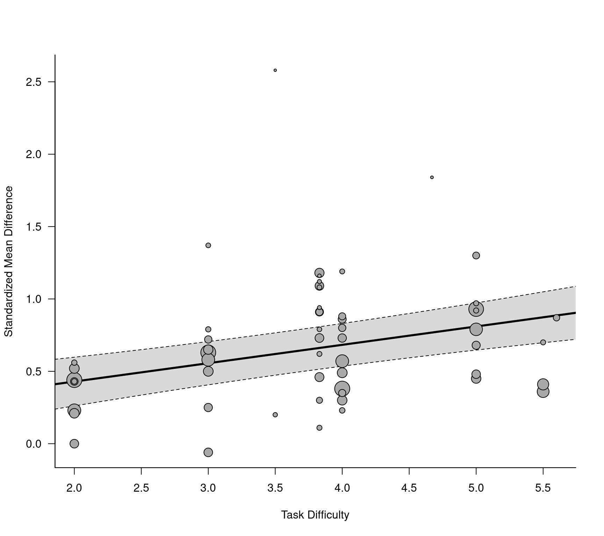

dat.knapp2017.RdResults from 31 studies examining differences in planning performance in schizophrenia patients versus healthy controls.
dat.knapp2017
The data frame contains the following columns:
| author | character | study author(s) |
| year | numeric | publication year |
| study | numeric | study id number |
| yi | numeric | standardized mean difference for planning performance |
| vi | numeric | corresponding sampling variance |
| difficulty | numeric | task difficulty |
| n_sz | numeric | number of schizophrenic patients |
| n_hc | numeric | number of healthy controls |
| comp | numeric | id for comparisons within studies |
| yi | numeric | standardized mean difference for IQ |
| vi | numeric | corresponding sampling variance |
The studies included in this dataset examined differences between schizophrenia patients and healthy controls with respect to their performance on the tower of London test (https://en.wikipedia.org/wiki/Tower_of_London_test) or a similar cognitive tasks measuring planning ability. The outcome measure for this meta-analysis was the standardized mean difference (with positive values indicating better performance in the healthy controls compared to the schizophrenia patients).
The dataset has a more complex structure for two reasons:
Studies 2, 3, 9, and 20 included more than schizophrenia patient group and the standardized mean differences were computed by comparing these groups against a single healthy control group.
Studies 6, 12, 14, 15, 18, 19, 22, and 26 had the patients and controls complete different tasks of varying complexity (essentially the average number of moves required to complete a task).
Both of these issues lead to correlated sampling errors, which should be taken into consideration in the analysis.
Knapp, F., Viechtbauer, W., Leonhart, R., Nitschke, K., & Kaller, C. P. (2017). Planning performance in schizophrenia patients: A meta-analysis of the influence of task difficulty and clinical and sociodemographic variables. Psychological Medicine, 47(11), 2002--2016. https://doi.org/10.1017/S0033291717000459
### copy data into 'dat' and examine data dat <- dat.knapp2017 dat#> authors year study yi vi difficulty n_sz n_hc comp yi_iq #> 1 Badcock et al. 2005 1 0.62 0.075 3.83 24 33 1 0.72 #> 2 Braw et al. 2008 2 0.46 0.047 3.83 44 44 1 NA #> 3 Braw et al. 2008 2 0.73 0.052 3.83 38 44 2 NA #> 4 Braw et al. 2012 3 1.18 0.062 3.83 39 37 1 NA #> 5 Braw et al. 2012 3 1.09 0.073 3.83 27 37 2 NA #> 6 Braw et al. 2012 3 0.91 0.102 3.83 15 37 3 NA #> 7 Braw et al. 2012 3 0.91 0.084 3.83 20 37 4 NA #> 8 Bustini et al. 1999 4 0.57 0.074 NA 28 28 1 NA #> 9 Dichter et al. 2006 5 0.40 0.180 NA 13 10 1 NA #> 10 Elliott et al. 1998 6 0.43 0.170 2.00 12 12 1 0.12 #> 11 Elliott et al. 1998 6 1.37 0.206 3.00 12 12 2 0.12 #> 12 Elliott et al. 1998 6 0.23 0.168 4.00 12 12 3 0.12 #> 13 Elliott et al. 1998 6 0.97 0.186 5.00 12 12 4 0.12 #> 14 Elliott et al. 1998 6 0.56 0.173 2.00 12 12 5 0.12 #> 15 Elliott et al. 1998 6 0.79 0.180 3.00 12 12 6 0.12 #> 16 Elliott et al. 1998 6 1.19 0.196 4.00 12 12 7 0.12 #> 17 Elliott et al. 1998 6 0.92 0.184 5.00 12 12 8 0.12 #> 18 Feldmann et al. 2006 7 0.20 0.096 3.50 22 20 1 0.62 #> 19 Goldberg et al. 1990 8 1.42 0.180 NA 13 15 1 NA #> 20 Greenwood et al. 2011 9 0.35 0.074 4.00 27 28 1 1.21 #> 21 Greenwood et al. 2011 9 0.88 0.078 4.00 28 28 2 1.26 #> 22 Hilti et al. 2010 10 1.08 0.079 3.83 26 33 1 0.76 #> 23 Huddy et al. 2007 11 0.94 0.111 3.83 20 20 1 0.42 #> 24 Joyce et al. 2002 12 0.44 0.020 2.00 135 81 1 0.49 #> 25 Joyce et al. 2002 12 0.63 0.021 3.00 135 81 2 0.49 #> 26 Joyce et al. 2002 12 0.38 0.020 4.00 135 81 3 0.49 #> 27 Joyce et al. 2002 12 0.93 0.022 5.00 135 81 4 0.49 #> 28 Krabbendam et al. 1999 13 0.33 0.102 NA 24 17 1 NA #> 29 Langdon et al. 2001 14 0.00 0.073 2.00 32 24 1 NA #> 30 Langdon et al. 2001 14 -0.06 0.073 3.00 32 24 2 NA #> 31 Langdon et al. 2001 14 0.73 0.078 4.00 32 24 3 NA #> 32 Langdon et al. 2001 14 0.48 0.075 5.00 32 24 4 NA #> 33 Langdon et al. 2002 15 0.43 0.092 2.00 25 20 1 NA #> 34 Langdon et al. 2002 15 0.72 0.096 3.00 25 20 2 NA #> 35 Langdon et al. 2002 15 0.80 0.097 4.00 25 20 3 NA #> 36 Langdon et al. 2002 15 1.30 0.109 5.00 25 20 4 NA #> 37 Marczewski et al. 2001 16 1.84 0.190 4.67 15 15 1 NA #> 38 Morice et al. 1996 17 2.58 0.216 3.50 17 17 1 0.58 #> 39 Morris et al. 1995 18 0.25 0.071 3.00 30 27 1 0.18 #> 40 Morris et al. 1995 18 0.86 0.077 4.00 30 27 2 0.18 #> 41 Morris et al. 1995 18 0.68 0.074 5.00 30 27 3 0.18 #> 42 Pantelis et al. 1997 19 0.21 0.060 2.00 36 31 1 0.48 #> 43 Pantelis et al. 1997 19 0.65 0.063 3.00 36 31 2 0.48 #> 44 Pantelis et al. 1997 19 0.30 0.061 4.00 36 31 3 0.48 #> 45 Pantelis et al. 1997 19 0.45 0.062 5.00 36 31 4 0.48 #> 46 Tenjin et al. 2012 20 1.03 0.054 NA 20 340 1 NA #> 47 Tenjin et al. 2012 20 0.92 0.104 NA 10 340 2 NA #> 48 Tyson et al. 2004 21 1.12 0.108 3.83 28 17 1 NA #> 49 Zhu et al. 2010 22 0.52 0.052 2.00 40 40 1 NA #> 50 Zhu et al. 2010 22 0.50 0.052 3.00 40 40 2 NA #> 51 Zhu et al. 2010 22 0.49 0.051 4.00 40 40 3 NA #> 52 Andersen 2013 23 0.30 0.042 3.83 48 48 1 NA #> 53 Ayesa-Arriola et al. 2013 24 0.36 0.022 5.50 86 97 1 0.47 #> 54 Ayesa-Arriola et al. 2013 24 0.41 0.030 5.50 75 62 2 0.10 #> 55 Fagerlund 2004 25 0.79 0.086 3.83 25 25 1 NA #> 56 Kontis et al. 2013 26 0.23 0.031 2.00 77 55 1 NA #> 57 Kontis et al. 2013 26 0.58 0.032 3.00 77 55 2 NA #> 58 Kontis et al. 2013 26 0.57 0.032 4.00 77 55 3 NA #> 59 Kontis et al. 2013 26 0.79 0.034 5.00 77 55 4 NA #> 60 Okruszek et al. 2013 27 0.70 0.071 5.50 30 30 1 NA #> 61 Saleem et al. 2013 28 1.16 0.136 3.83 20 15 1 0.23 #> 62 Tsuchimine et al. 2013 29 1.29 0.039 NA 56 68 1 0.37 #> 63 Tsuchimine et al. 2013 29 0.63 0.039 NA 47 62 2 0.43 #> 64 Tsuchimine et al. 2013 29 0.31 0.121 NA 15 19 3 1.00 #> 65 Asevedo et al. 2013 30 0.11 0.070 3.83 30 27 1 NA #> 66 Shum et al. 2004 31 0.87 0.036 5.60 60 60 1 NA #> vi_iq #> 1 0.076 #> 2 NA #> 3 NA #> 4 NA #> 5 NA #> 6 NA #> 7 NA #> 8 NA #> 9 NA #> 10 0.167 #> 11 0.167 #> 12 0.167 #> 13 0.167 #> 14 0.167 #> 15 0.167 #> 16 0.167 #> 17 0.167 #> 18 0.100 #> 19 NA #> 20 0.086 #> 21 0.086 #> 22 0.074 #> 23 0.102 #> 24 0.020 #> 25 0.020 #> 26 0.020 #> 27 0.020 #> 28 NA #> 29 NA #> 30 NA #> 31 NA #> 32 NA #> 33 NA #> 34 NA #> 35 NA #> 36 NA #> 37 NA #> 38 0.123 #> 39 0.071 #> 40 0.071 #> 41 0.071 #> 42 0.062 #> 43 0.062 #> 44 0.062 #> 45 0.062 #> 46 NA #> 47 NA #> 48 NA #> 49 NA #> 50 NA #> 51 NA #> 52 NA #> 53 0.023 #> 54 0.030 #> 55 NA #> 56 NA #> 57 NA #> 58 NA #> 59 NA #> 60 NA #> 61 0.117 #> 62 0.033 #> 63 0.038 #> 64 0.134 #> 65 NA #> 66 NA### fit a standard random-effects model ignoring correlated sampling errors res <- rma(yi, vi, data=dat) res#> #> Random-Effects Model (k = 66; tau^2 estimator: REML) #> #> tau^2 (estimated amount of total heterogeneity): 0.0551 (SE = 0.0212) #> tau (square root of estimated tau^2 value): 0.2348 #> I^2 (total heterogeneity / total variability): 47.74% #> H^2 (total variability / sampling variability): 1.91 #> #> Test for Heterogeneity: #> Q(df = 65) = 129.0088, p-val < .0001 #> #> Model Results: #> #> estimate se zval pval ci.lb ci.ub #> 0.6557 0.0439 14.9521 <.0001 0.5698 0.7417 *** #> #> --- #> Signif. codes: 0 ‘***’ 0.001 ‘**’ 0.01 ‘*’ 0.05 ‘.’ 0.1 ‘ ’ 1 #>### fit a multilevel model with random effects for studies and comparisons within studies res <- rma.mv(yi, vi, random = ~ 1 | study/comp, data=dat) res#> #> Multivariate Meta-Analysis Model (k = 66; method: REML) #> #> Variance Components: #> #> estim sqrt nlvls fixed factor #> sigma^2.1 0.0383 0.1958 31 no study #> sigma^2.2 0.0263 0.1621 66 no study/comp #> #> Test for Heterogeneity: #> Q(df = 65) = 129.0088, p-val < .0001 #> #> Model Results: #> #> estimate se zval pval ci.lb ci.ub #> 0.6801 0.0560 12.1513 <.0001 0.5704 0.7898 *** #> #> --- #> Signif. codes: 0 ‘***’ 0.001 ‘**’ 0.01 ‘*’ 0.05 ‘.’ 0.1 ‘ ’ 1 #>### construct an approximate V matrix assuming a correlation of 0.4 for the sampling errors ### of different comparisons within the same study V <- lapply(split(dat$vi, dat$study), function(v) { S <- diag(sqrt(v), nrow=length(v), ncol=length(v)) R <- matrix(0.4, nrow=length(v), ncol=length(v)) diag(R) <- 1 S %*% R %*% S }) V <- bldiag(V, order=dat$study) ### fit the same multilevel model, but now use this V matrix in the model res <- rma.mv(yi, V, random = ~ 1 | study/comp, data=dat) res#> #> Multivariate Meta-Analysis Model (k = 66; method: REML) #> #> Variance Components: #> #> estim sqrt nlvls fixed factor #> sigma^2.1 0.0143 0.1197 31 no study #> sigma^2.2 0.0483 0.2197 66 no study/comp #> #> Test for Heterogeneity: #> Q(df = 65) = 145.0131, p-val < .0001 #> #> Model Results: #> #> estimate se zval pval ci.lb ci.ub #> 0.6716 0.0556 12.0874 <.0001 0.5627 0.7805 *** #> #> --- #> Signif. codes: 0 ‘***’ 0.001 ‘**’ 0.01 ‘*’ 0.05 ‘.’ 0.1 ‘ ’ 1 #>#> #> Number of outcomes: 66 #> Number of clusters: 31 #> Outcomes per cluster: 1-8 (mean: 2.13, median: 1) #> #> Model Results: #> #> estimate se tval df pval ci.lb ci.ub #> 0.6716 0.0553 12.1451 30 <.0001 0.5587 0.7845 *** #> #> --- #> Signif. codes: 0 ‘***’ 0.001 ‘**’ 0.01 ‘*’ 0.05 ‘.’ 0.1 ‘ ’ 1 #>### examine if task difficulty is a potential moderator of the effect res <- rma.mv(yi, V, mods = ~ difficulty, random = ~ 1 | study/comp, data=dat)#> Warning: Rows with NAs omitted from model fitting.res#> #> Multivariate Meta-Analysis Model (k = 57; method: REML) #> #> Variance Components: #> #> estim sqrt nlvls fixed factor #> sigma^2.1 0.0587 0.2423 25 no study #> sigma^2.2 0.0115 0.1075 57 no study/comp #> #> Test for Residual Heterogeneity: #> QE(df = 55) = 101.1979, p-val = 0.0001 #> #> Test of Moderators (coefficient 2): #> QM(df = 1) = 14.4849, p-val = 0.0001 #> #> Model Results: #> #> estimate se zval pval ci.lb ci.ub #> intrcpt 0.1756 0.1483 1.1842 0.2363 -0.1151 0.4663 #> difficulty 0.1268 0.0333 3.8059 0.0001 0.0615 0.1921 *** #> #> --- #> Signif. codes: 0 ‘***’ 0.001 ‘**’ 0.01 ‘*’ 0.05 ‘.’ 0.1 ‘ ’ 1 #>#> #> Number of outcomes: 57 #> Number of clusters: 25 #> Outcomes per cluster: 1-8 (mean: 2.28, median: 1) #> #> Test of Moderators (coefficient 2): #> F(df1 = 1, df2 = 23) = 25.7916, p-val < .0001 #> #> Model Results: #> #> estimate se tval df pval ci.lb ci.ub #> intrcpt 0.1756 0.1146 1.5329 23 0.1389 -0.0614 0.4126 #> difficulty 0.1268 0.0250 5.0785 23 <.0001 0.0752 0.1785 *** #> #> --- #> Signif. codes: 0 ‘***’ 0.001 ‘**’ 0.01 ‘*’ 0.05 ‘.’ 0.1 ‘ ’ 1 #>### draw bubble plot regplot(sav, xlab="Task Difficulty", ylab="Standardized Mean Difference", las=1, digits=1, bty="l")